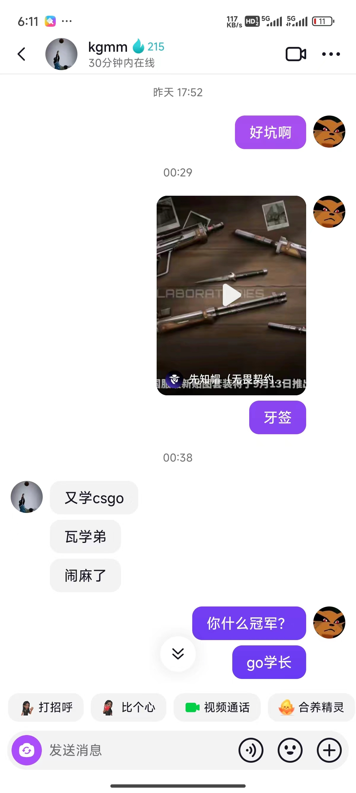
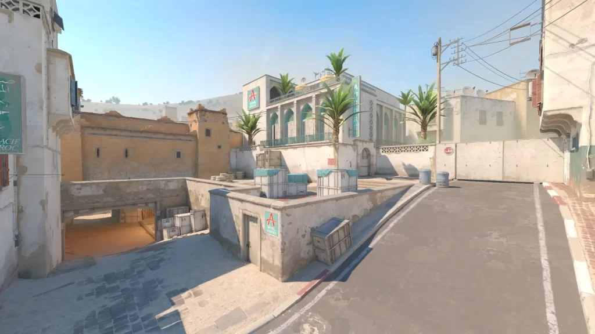
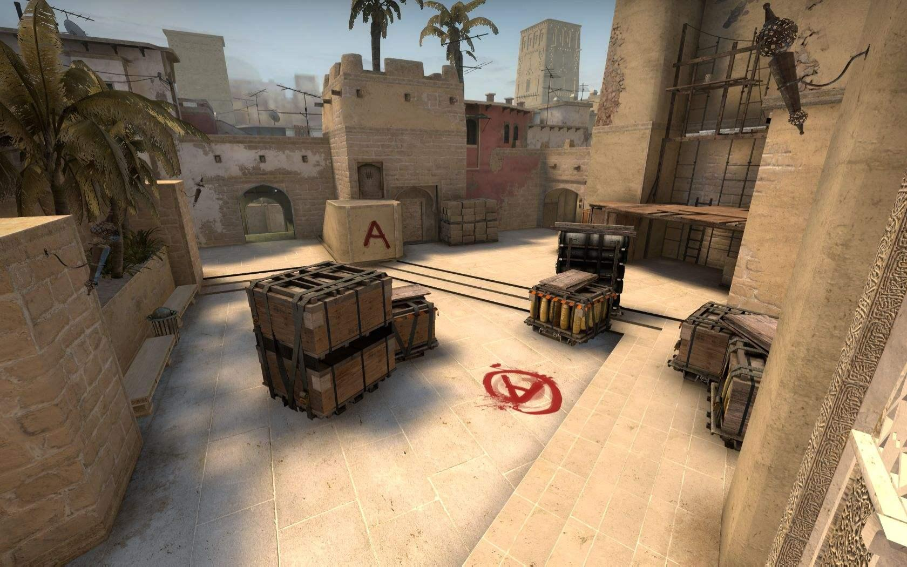

go学长访谈: 瓦洛兰特新皮肤抄袭cs短剑,闹麻了！
2024年8月24日 8:08 TikTok
go学长访谈第一期:

以下是go学长的游戏记录，cs2游戏主播DANK1NG评价： 打法有点混！
| 地图 | 比分 | K—D | rating | 备注 |
|---|---|---|---|---|
| 沙二 | 13-5 | 11-20 | 0.8 | 应该躺赢 |
| 小镇 | 0-13 | 0-13 | 0.05 | 诗人沃茨 |
| 迷城 | 5-13 | 2-18 | 0.15 | 把把送首杀 |
以下是与go学长的切磋视频
鉴于go学长的游戏表现以及EDG 夺冠 ，从今往后 1、cs玩家跟瓦洛兰特玩家说话前要添加敬语。 2、瓦洛兰特玩家对话途中cs玩家不允许插嘴。 3、cs玩家每天早晚都要向瓦洛兰特玩家问好。 4、cs玩家发言控制在14字内，必须打标点符号，不允许使用贴吧第一排以下的表情。 5、cs玩家不允许发表情包。 6、cs玩家发图或语音必须征得瓦洛兰特玩家同意。 7、cs玩家一天只能发10句话，超过必禁。 8、cs玩家不得发任何关于瓦洛兰特玩家的信息。 9、22:00后对cs玩家实行宵禁。